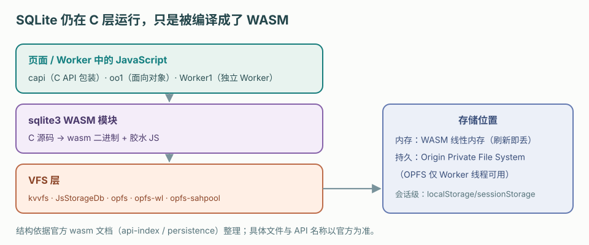
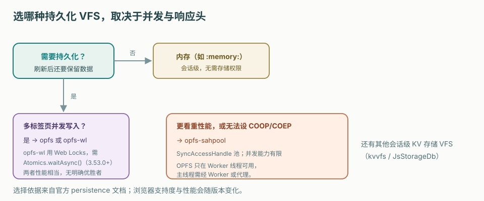

SQLite WASM 与 JS 绑定：接口变体、VFS 与构建
在浏览器里运行 SQLite 意味着什么？看清 capi/oo1/Worker1 三种 JS 接口、内存与 OPFS 持久化 VFS 的取舍，以及 opfs-wl 在 3.53.0 的角色。
1. 在浏览器里跑 SQLite 意味着什么？
把 SQLite 编译成 WebAssembly，就能在浏览器里使用一个真正的 SQL 引擎：支持 JOIN、GROUP BY、子查询与事务，而不是一个键值缓存。官方有一个专门的 WASM/JS 子项目，文档入口在 sqlite.org/wasm；发布形式是一个 npm 模块。
关键认识：SQLite 仍然在 C 层运行。WASM 只是把它编译成一个能在浏览器沙箱里执行的二进制，外加一层胶水 JS。你所调用的 db.exec() 最终仍落到与原生库相同的 prepare/step 逻辑上，只是存储位置换成了内存或浏览器提供的文件系统。
emcc 导出选项、ext/wasm/ 文件清单与行数，以及好些无法核对的性能数字与迁移故事。这些已删除；本章只保留官方 WASM 文档能核对的接口、VFS 与注意事项。2. 三种 JS 接口：capi、oo1、Worker1
官方 API 不是把 C 函数一对一搬过来，而是提供了几个层次的封装，供不同习惯的客户选择：

| 命名空间 / API | 定位 |
|---|---|
sqlite3.capi | 对 C API 的包装，适合熟悉底层接口的使用者 |
sqlite3.oo1 | 面向对象的接口（OO API #1），如 oo1.DB、oo1.OpfsWlDb |
| Worker1 | 让 sqlite3 完全运行在独立 Worker 线程中，并提供 Promise 风格的代理 |
import sqlite3Init from '@sqlite.org/sqlite-wasm';
const sqlite3 = await sqlite3Init();
const db = new sqlite3.oo1.DB(':memory:');
const rows = db.exec('SELECT 1 AS n', { returnValue: 'resultRows' });接口名称与可用性以官方 API Index 为准；不同变体的加载方式与导出符号并不相同。
3. 数据放哪：内存与 OPFS VFS 取舍
浏览器沙箱挡住了直接的文件系统访问，所以 SQLite 通过 VFS 接入浏览器提供的存储。官方列出了多种持久化/会话存储方案，选哪一个取决于是否要持久化、是否要多标签页并发、能否设置响应头。

opfs 或 opfs-wl；更看重性能或无法设置 COOP/COEP 时用 opfs-sahpool。| VFS | 要点 |
|---|---|
内存（如 :memory:） | 数据在 WASM 线性内存，刷新即丢，无需存储权限 |
opfs | 基于 OPFS 的持久化；只在 Worker 线程可用 |
opfs-wl | 3.53.0 加入；用 Web Locks 加锁，需 Atomics.waitAsync() |
opfs-sahpool | SyncAccessHandle 池；并发能力有限，但性能导向 |
kvvfs / JsStorageDb | 基于 localStorage/sessionStorage 等会话级存储 |
4. 构建与分发
官方用 Emscripten 工具链把 SQLite 的 C 源码编译成 WASM，具体的导出选项、内存配置与产物拆分记录在官方的 building / emscripten 文档中。作为使用者，通常不必自己编译，而是直接安装 npm 模块：
npm install @sqlite.org/sqlite-wasm
# 具体版本与用法以官方 npm 文档为准emcc 选项与导出函数名。这些随项目版本变化，应以官方 building/emscripten 页面为准；把某个版本的命令当成永久事实会误导读者。5. 一个最小示例与注意事项
下面的最小示例在浏览器中创建一个内存库并执行一条查询。它只依赖官方 npm 模块，不涉及服务器：
import sqlite3Init from '@sqlite.org/sqlite-wasm';
const sqlite3 = await sqlite3Init();
const db = new sqlite3.oo1.DB(':memory:');
const rows = db.exec("SELECT 'Hello, SQLite WASM!' AS message", {
returnValue: 'resultRows', rowMode: 'object'
});
console.log(rows);要用持久化存储，把 :memory: 换成 OPFS VFS（通常在 Worker 内创建），并处理兼容性：先能力检测，不支持时降级到内存库。注意：浏览器端 SQL 与原生 SQL 语义一致，但存储后端、并发模型与持久化行为不同，不能把本机行为直接外推到 OPFS。
- OPFS 仅在 Worker 线程可用；主线程需经 Worker 或异步代理；
- 部分 OPFS 配置依赖 COOP/COEP 响应头；
- OPFS VFS 对 Safari 17 以前版本有兼容性注意；
- 会话级
kvvfs/JsStorageDb适合小数据，不要当通用持久层。
6. 可运行实验
浏览器/WASM/OPFS 部分无法在 CI 的无头环境下当作命令行程序执行，所以我们把能被自动验证的部分抽出来：examples/26_demo_sql.py 用原生 sqlite3 运行演示中同样的 SQL，证明其语义与结果。
python3 examples/26_demo_sql.py
# PASS: demo SQL semantics verified on native sqlite3 3.54.0; browser WASM/OPFS not executed (see notes)
# 浏览器 WASM/OPFS 部分本周未在 CI 执行，属“未验证”。这是有意的诚实做法：不能用“文件存在”或“本地跑过一次”去宣称浏览器端已通过。要验证 WASM/OPFS，需在真实浏览器中按官方 HOWTO 手动或自动化运行。
可重复练习
- 用官方 npm 模块在浏览器中跑通最小示例，记录加载与首个查询的耗时；
- 改用 OPFS，验证刷新后数据仍在；再把文件放到 Worker 中验证主子线程差异；
- 列出你所用浏览器支持的 VFS，并解释为何多标签页并发时倾向
opfs/opfs-wl。
自测：为什么 OPFS 不能直接在主线程用？
官方文档说明 OPFS 只在 Worker 线程上下文中可用；主线程需要把数据库操作交给 Worker，或经由异步代理转发请求。
原始资料与版本边界
本章接口与 VFS 行为来自 SQLite 官方 WASM 文档；具体 API 名称、导出、浏览器支持与性能均随版本变化，应以官方页面为准。浏览器端实验本周未在 CI 执行。
- SQLite WebAssembly & JavaScript 文档 · SQLite 官方
- API Index（capi / oo1 / Worker1） · SQLite 官方
- Persistent Storage Options · SQLite 官方
- Building sqlite3 WASM · SQLite 官方
- SQLite 3.53.0（opfs-wl） · SQLite 官方